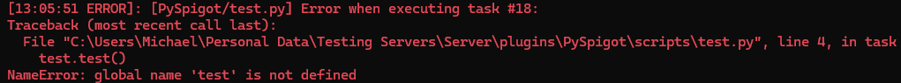
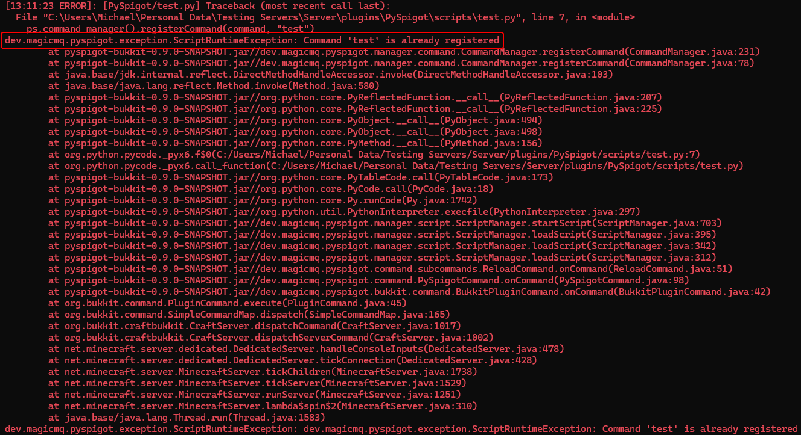

Writing Scripts¶
This tutorial provides an overview of PySpigot only, and does not cover in detail the Bukkit/Spigot API or writing Python code. Any questions concerning Python syntax or writing Python code in general should be redirected to the appropriate forum, as this tutorial will not provide an intoroduction to writing basic Python code.
There are a few basic things to keep in mind when writing PySpigot scripts:
- PySpigot requires Java 17 or above.
- PySpigot officially supports Spigot and Paper on Minecraft versions 1.16 and newer.
- Under the hood, PySpigot utilizes Jython, a Java implementation of Python. Currently, Jython implements Python 2 only, so Python 2 syntax should be used when writing PySpigot scripts.
- Scripts must be written in Python syntax and script files should in
.py. Files that do not end in .py will not be loaded. - Scripts are placed in the
scriptsfolder under the PySpigot plugin folder. PySpigot allows for creation of subfolders within the scripts folder for organizational purposes, but script names must be unique across all subfolders. - Avoid using the variable names
globalandlogger. These variable names are assigned automatically at runtime. More information on these below. - Scripts are functionally isolated from one another. With the exception of the
globalvariable (see the Global Variables section below), nothing is shared across scripts. - To make use of any of the managers that PySpigot provides (such as registering listeners, tasks, etc.), they must be imported into your script. See the section below on Making Use of PySpigot's Managersfor details.
- If you are utilizing the API of any plugin other than ProtocolLib or PlaceholderAPI, make sure you specify the plugin as a dependency in the
script_options.ymlfile. See the Script Options page for more info.
A Note About Jython¶
Under the hood, PySpigot utilizes Jython, a Java implementation of Python. The PySpigot jar file is quite large in comparison to other Spigot plugins because Jython (as well as its dependencies) are bundled into PySpigot.
Jython is written such that scripts are compiled and interpreted entirely in Java. This means that scripts have native access to the entire Java class path at runtime, making it very easy to work with the Spigot API and other aspects of the server. Consider the following example:
As you can see from the above code block, working with Java classes/objects is intuitive. Should you have any trouble interfacing with Java, Jython has fairly well-written documentation you can check out here.
Currently, the latest version of Jython implements Python 2. Thus, for now, PySpigot scripts are written in Python 2. While some may see this as a drawback, Python 2 is usually sufficient for the vast majority of use cases of PySpigot, and I have not yet found any case where a Python 3 feature was required for script functionality. The developers of Jython intend on implementing Python 3 in a future release of Jython, but the expected timeframe of this update is unclear. Work is ongoing on the Jython GitHub repository.
For more information about Jython, visit jython.org.
Standard Python Libraries¶
Jython does not support many of the built-in Python modules (i.e. those that are written in C for Python). These would have to be ported to Java or implemented with a JNI bridge. Some built-in modules have been ported to Jython, most notably cStringIO, cPickle, struct, and binascii. Jython's documentation states it is unlikely JNI modules will ever be included in the Jython proper.
Jython now supports a large marjority of the standard Python library. However, Jython's documentation has been slow in keeping up with these additions, so if Jython's documentation does not reference a library, it may still be supported.
If you want to use a standard Python module in your script, try importing it. If that works, then you're probably all set. You can also call dir() on the modules to check the list of functions it implements.
Basic Script Information¶
All PySpigot scripts are designed to be self-contained, single files. This means that each script will, at most, consist of one file only. Additionally, scripts are isolated from one another, meaning they do not share variables, functions, or scope. Scripts are capable of interacting with one another in various ways (more detail on this below), but think of each .py file in the scipts folder as an individual entity, executed in its own environment.
PySpigot scripts are placed in the scripts folder, which can be found in PySpigot's main plugin folder. Creation of subfolders within the scripts folder for organizational purposes is supported. PySpigot will attempt to load any file in the scripts folder (including in subfolders) that ends in the .py extension. Any files in the scripts folder that do not end in .py will not be loaded.
Warning
Script names must be unique, as their names are used to identify them at runtime. This caveat also applies if you are using subfolders within the scripts folder. For example, scripts/folder1/test.py and scripts/folder2/test.py will conflict, but scripts/folder1/test.py and scripts/folder2/test2.py will not.
Script Options¶
There are a variety of options that can be set for each script, including whether or not it is enabled, load priority, and logging options. These are set within the script_options.yml file in PySpigot's main plugin folder. For more information on script options, see the Script Options page.
Notice
Defining script options for each script is optional; scripts will function normally without explicitly-defined options.
Script Permissions¶
PySpigot allows scripts to define a list of permissions that it uses. This is useful if scripts want to restrict access to certain features. Script permissions are initialized and loaded just prior to parsing and executing the script's code, and are removed just after a script is stopped.
Script permissions are defined in the script_options.yml file. For more information on how to define permissions, see the documentation for script options.
Script Loading¶
PySpigot loads and runs all scripts in the scripts folder (including scripts within subfolders) automatically on plugin load or server start. Script load order is determined by load priority, as defined in the script_options.yml file. Scripts that don't list any load priority will inherit the default load priority specified in the config.yml. Scripts that have the same load priority are loaded in alphabetical order.
Scripts can also be manually loaded using /pyspigot load <scriptname> if you want to load/enable a script after server start/plugin load. If you make changes to a script during runtime, you must reload it for changes to take effect. Reload scripts with /pyspigot reload <scriptname>.
There is one config option related to loading scripts:
script-load-delay: This is the delay, in ticks, that PySpigot will wait after server loading is completed to load scripts. There are 20 server ticks in one real-world second. For example, if the value is 20, then PySpigot will wait 20 ticks (or 1 second) after the server finishes loading to load scripts.
Start and Stop Functions¶
There are two special functions you may include in your PySpigot scripts: start and stop. Both take no parameters.
If a start function is defined in your script, it will be called by PySpigot when the script starts.
If a stop function is defined in your script, it will be called by PySpigot when your script is stopped/unloaded.
Notice
Both start and stop are optional, you do not need to define them in your script if they are not needed.
The pyspigot Helper Module¶
As of version 0.5.0, PySpigot ships with a helper module called pyspigot.py that contains various useful functions to access PySpigot's manager classes. This module is automatically placed into the python-libs folder on plugin load.
PySpigot includes an automated system to automatically update the pyspigot.py helper module when changes are detected. This feature can be disabled if desired by setting the auto-pyspigot-lib-update-enabled option under debug-options in the config.yml file to false.
Click here to view the source code of the pyspigot.py module.
Warning
It is recommended that you leave automatic updating of the pyspigot.py helper module enabled to ensure that any changes, additions, and fixes are always reflected on your end.
Global Variables¶
PySpigot includes a global variable system that allows variables to be shared across different scripts. On the Java end, this system is backed by a HashMap, which stores data in key:value pairs, much like a dict in Python. The intention of this system is to act as a global set of variables in the event that multiple scripts need to access the same variable. This is a nifty feature if you would like to share variables/values across multiple different scripts.
See the Global Variables page for detailed information on how to use the global variables system.
Script Errors and Exceptions¶
Scripts can generate errors/exceptions. PySpigot will attempt to handle these to prevent other parts of your script from breaking. If a script happens to generate an unhandled error/exception when it is loaded, the script will be automatically unloaded to prevent further issues. If an unhandled error/exception occurs somewhere else at a later point in time, such as while calling an event listener or command function, the script will remain loaded, but subsequent code within the function will not be executed. In any case, errors/exceptions will be logged to the console and to the respective script's log file (if the script has file logging enabled per its script options).
Notice
Because PySpigot is an active project in youth stages of development, you may encounter exceptions that are caused by a bug within PySpigot itself. If something goes wrong with your script, and your debuging efforts have been futile, please submit an issue on Github or join the Discord to ask for help.
There are two types of errors that a script can produce:
Python Errors¶
These are exceptions intrinsic to your script's Python code. These exceptions will generate a log entry with a Python traceback indicating the script file and line that caused the exception. Because these exceptions originate in Python code, they should be fairly easy to debug. They will look like this:

The boxed text is the Python traceback.
Java Exceptions¶
These exceptions occur when a script calls Java code and the exception occurs somewhere within the Java code (but not from within the script). These exceptions will also generate a log entry with a Python traceback indicating the script file and line that caused the exception. These can be trickier to debug because the cause of the exception may not be immediately apparent. The script log/console should give you an idea of what went wrong. They will look like this:

You might notice that these look very similar to Python exceptions. The only difference is that there will be an accompanying Java exception (java.lang.<exception>) along with a brief message about why the exception occurred.
Handling Exceptions¶
You may use Python's try: and except: syntax in order to handle exceptions yourself. For example:
- Import the appropriate Java exception for use in a
tryexceptblock later. - Except the Java
RuntimeExceptionin the same way that a Python error would be excepted.
Script Logging¶
Like scripts themselves, a script's logger is self-contained. Each script has its own logger, which is a subclass of java.util.logging.Logger. PySpigot creates a new logger for each running script. A script's logger is automatically assigned to its global namespace under the variable name logger. To access your script's logger, use the logger variable. For example:
- The
loggervaraible can be utilized immediately without assigning it first, since the script's logger is automatically assigned to theloggervariable when the script is started.
When accessing your script's logger, you can use any of the functions listed here. PySpigot adds two additional functions for convenience:
logger.print(message): Useful for quickly adding debug messages to your scriptlogger.debug(message): Under the hood, functions the same aslogger.print
Notice
As of PySpigot 0.7.0, any messages printed via Python's print function are automatically captured and redirected to a script's logger. This makes it much easier to discern which print statements came from which script (if you have multiple scripts running), since the script's name is attached to all print messages.
[STDOUT] is also attached to print messages to indicate that the message was printed to STDOUT.
Script Log Files¶
As stated previously, each script has its own log file. Script log files can be found in the logs folder within the PySpigot plugin folder. All messages related to a script will be logged in its respective log file. If you would like to disable file logging for a script, set the file-logging-enabled script option to false.
The script logger also logs messages with an attached level. These levels are the Java logging levels. In short, the levels represent the acuity/severity of the log message. The three most common logging levels you will see are INFO, WARNING, and SEVERE:
INFO: This level demarcates the message as an informational message.WARNING: This level demarcates the log message as a potential problem, but no immediate action is required.SEVERE: This level demarcates the log message as a serious failure, exception, or error, that requires prompt action.
Each script logger has a default minimum level at which log messages are logged. By default, this value is set to INFO. With a minimum level set at INFO, messages at the INFO level and higher (WARNING, SEVERE) are logged, but messages lower than the INFO level (CONFIG, FINE, FINER, FINEST) are not logged.
You may change the minimum logging level for a script by setting the min-logging-level script option.
A formatted time stamp is also printed in each log message with the exact time that the message was logged, in the local machine's time zone. If you would like to use a different time stamp format, edit the log-timestamp-format value in the config.yml.
Non-ASCII Characters in Script Files¶
Jython reads and compiles script files using ASCII encoding. This means that it won't recognize non-ASCII characters in the file. You may see a SyntaxError when you load a script with non-ASCII characters. Additionally, in Python 2, the str type is a collection of 8-bit characters. Consequently, all characters in the English alphabet (and some basic symbols) can be represented using these 8-bit characters, but special symbols and characters from non-Latin alphabets cannot. There are a couple ways to work around these two constraints:
Workaround 1¶
Jython allows you to specify the encoding of your script file. This is done by specifying an encoding declaration in your script. This ensures that when Jython reads and compiles the file, it will recognize the non-ASCII characters. Add the following to the first or second line of your script file:
#coding: utf-8
Of course, you can replace utf-8 with whatever character encoding standard you'd like Jython to use. For a list of supported encoding schemes, see this page.
Warning
You must put the encoding declaration on either the first or second line of your script, as Jython only searches for encoding declarations in this area.
Python 2 includes a unicode type, which supports all UTF-8 characters (symbols, non-Latin alphabets, etc.). You can specify that you want to use the unicode type for the string (and not str) by adding a preceding u. For example:
- Notice that a
udirectly preceeds the string. This denotes that the string should be treated a specialunicodestring, not a simplestr.
Workaround 2¶
You can use also use the hex codes of the unicode characters you want to write. You will still need to denote that the string is a unicode string by adding a preceding u, but you don't need to add an encoding declaration at the top of your script file since you aren't actually writing any non-ASCII characters in the file. For example: